Paper
CSS token
Charcoal page background
ASCEND / Live identity system 01
The same identity. From the first impression to the smallest interaction. A live reference for the storefront’s actual styles and assets.
ASCEND / Hero archetype / Futuristic Modernism
College students moving between classes and activities; creative, technology-oriented young adults moving between work and casual outings. These are unvalidated hypotheses.
ASCEND transforms an everyday essential into a reminder to keep moving toward your goals.
Geometric order, striking scale, clear hierarchy. A personal choice intended to communicate confidence and focus, not a measured audience effect.
Original outlined geometry. One solid color.
Navigation / 175 × 28px
Light-background alternate / black on white
Primary: white on charcoal. Alternate: black on white. Shared
source: assets/ascend-wordmark.svg. Preserve
proportions, generous clear space, and open counters. The ascending
opening in the A stays subtle. No trademark clearance claimed.
Live values from the storefront’s shared CSS variables.
CSS token
Charcoal page background
CSS token
Primary white text
CSS token
Deep-red geometry and actions
CSS token
Restrained detail and focus
CSS token
Raised surfaces
CSS token
Supporting text
White text on red for actions. Gold details on charcoal. Do not use red as small text on charcoal. Focus indicators and error messages use separately readable tones.
Self-contained system fonts. No external font requests.
Become
your own
next.
A clear start. Your way.
ASCEND / Everyday essential
Shared spacing tokens and deliberate section rhythm.
CSS token
CSS token
CSS token
CSS token
CSS token
CSS token
Confident. Encouraging. Direct. Independent.
Your goals. Your pace.
Shared respect for individual progress, without invented membership or pressure to conform. This is an intended mechanism, not proven audience behavior.
Visitors can voluntarily choose Focus or Explore, then receive an optional suggestion consistent with that intention. No enrollment, persistence, or purchase requirement.
Short, purposeful motion with an immediate static alternative.
Hero circle expansion and ring draw: 1000ms, once. Hero text: 750ms from the left, 48px. Product text and decorative frames: 750ms, 40px from opposite sides. Direction text: 700ms, 40px. Bag heading: 650ms, 32px; labels stagger by 90ms. Price accent: 450ms, scaling 85% to 100% without overshoot. Other text staggers by 100ms. Mobile travel is 24px. Button transitions: 180ms. Bag feedback: 400ms. Reduced-motion preferences disable movement and smooth scrolling. Content remains visible if JavaScript or IntersectionObserver is unavailable.
Interactive elements and every ancestor containing controls stay stationary; only noninteractive text and decorative frames translate. Focus or anchor navigation settles only the relevant group, preserving later scroll reveals. No looping product motion, flashing, scroll trapping, or hidden essential information. The same motion classes and rules are shared with the storefront.
The same hero asset used by the storefront.

Original asset generated with the built-in image tool, without importing third-party photography. The original SVG and both comparison previews remain unchanged. Natural folds, soft lighting, a quiet construction grid, and tighter spacing refine presentation without adding product specifications.